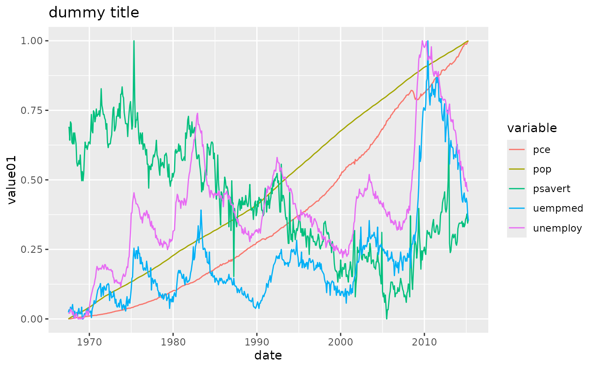
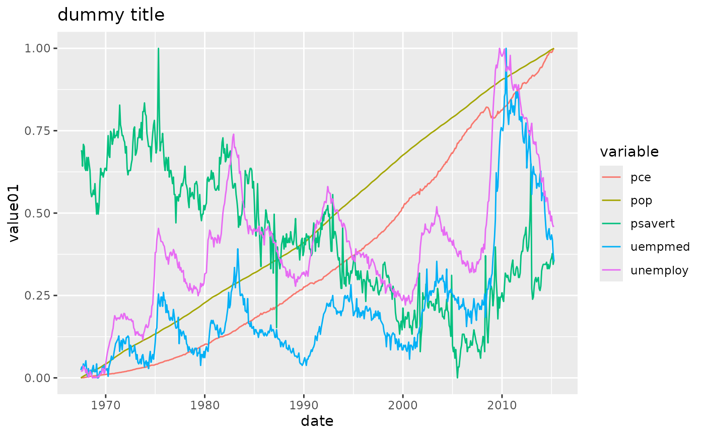

Extract information from a graphical object
VI.RdA method that extracts the most relevant information from a graphical object (or implied set of graphical objects) and display the interpreted results in text or HTML form.
The method includes representations of summary methods that are more suitable for blind users. For example, the method for a data.frame uses a single line for each variable instead of the normal column layout used by the summary method.
Usage
VI(x, Describe=FALSE, ...)
# S3 method for histogram
VI(x, Describe=FALSE, ...)
# S3 method for aov
VI(x, Describe=FALSE, ...)
# S3 method for htest
VI(x, Describe=FALSE, digits = getOption("digits"), ...)
# S3 method for lm
VI(x, Describe=FALSE, ...)
# S3 method for ggplot
VI(x, Describe=FALSE, threshold=10,
template=system.file("whisker/VIdefault.txt", package="BrailleR"),
...)Arguments
- x
any R object
- Describe
Should the
Describe()function be called at the same time- digits
number of decimal places to show
- threshold
Only for ggplot. Maximum number of data items that should be individually listed in the output.
- template
Only for ggplot. Template file, in mustache format, to be used in creating the text
- ...
other arguments, currently ignored
Details
VI() is intended to extract the specific details for the particular graph or output.
It will provide the information as a printout to the console/terminal window.
Value
Nothing is returned when working with most of the functions functionality.
The VI.lm() method is the first to move away from this idea and use a process that builds on the UniDesc() function. In this case, the method creates an R markdown file and compiles it into HTML. The HTML document is opened if the R session is interactive.
VI.ggplot returns a structure containing a hierarchical representation of the graph as well as the text description as a character vector. When run interactively, the text
description is printed.
Note
The VI.lm method fails if you use the one line VI(lm(...)) even if the model is named using VI(Model1 <- lm(...)). It does work if two explicit commands are used. For example Model1 = lm(...) followed by VI(Model1).
The ggplot2 package contains many layers and not all of them have a VI output yet. However most of the commonly used ones do. Regardless the VI output should be considered experimental with some results being potenitally misleading.
Author
A. Jonathan R. Godfrey, Debra Warren, Sophie Banks, Tony Hirst, Timothy P. Bilton and James A. Thompson
Examples
# Base R
RandomX=rnorm(500)
PlottedFig=hist(RandomX)
 VI(PlottedFig)
#> This is a histogram, with the title: with the title: Histogram of RandomX
#> "RandomX" is marked on the x-axis.
#> Tick marks for the x-axis are at: -3, -2, -1, 0, 1, 2, and 3
#> There are a total of 500 elements for this variable.
#> Tick marks for the y-axis are at: 0, 20, 40, 60, and 80
#> It has 13 bins with equal widths, starting at -3.5 and ending at 3 .
#> The mids and counts for the bins are:
#> mid = -3.25 count = 2
#> mid = -2.75 count = 1
#> mid = -2.25 count = 12
#> mid = -1.75 count = 18
#> mid = -1.25 count = 51
#> mid = -0.75 count = 70
#> mid = -0.25 count = 92
#> mid = 0.25 count = 92
#> mid = 0.75 count = 81
#> mid = 1.25 count = 48
#> mid = 1.75 count = 23
#> mid = 2.25 count = 8
#> mid = 2.75 count = 2
# ggplot
if(require(ggplot2)){
ggplot(economics_long, aes(date, value01, colour = variable)) +
geom_line() +
ggtitle('dummy title')
}

#> This chart has title 'dummy title'.
#> It has x-axis 'date' with labels 1970, 1980, 1990, 2000 and 2010.
#> It has y-axis 'value01' with labels 0.00, 0.25, 0.50, 0.75 and 1.00.
#> There is a legend indicating colour is used to show variable, with 5 levels:
#> pce shown as strong reddish orange colour,
#> pop shown as strong greenish yellow colour,
#> psavert shown as vivid yellowish green colour,
#> uempmed shown as brilliant blue colour and
#> unemploy shown as vivid purple colour.
#> The chart is a set of 5 lines.
#> Line 1 connects 574 points.
#> This line has colour strong reddish orange which maps to variable = pce.
#> Line 2 connects 574 points.
#> This line has colour strong greenish yellow which maps to variable = pop.
#> Line 3 connects 574 points.
#> This line has colour vivid yellowish green which maps to variable = psavert.
#> Line 4 connects 574 points.
#> This line has colour brilliant blue which maps to variable = uempmed.
#> Line 5 connects 574 points.
#> This line has colour vivid purple which maps to variable = unemploy.
VI(PlottedFig)
#> This is a histogram, with the title: with the title: Histogram of RandomX
#> "RandomX" is marked on the x-axis.
#> Tick marks for the x-axis are at: -3, -2, -1, 0, 1, 2, and 3
#> There are a total of 500 elements for this variable.
#> Tick marks for the y-axis are at: 0, 20, 40, 60, and 80
#> It has 13 bins with equal widths, starting at -3.5 and ending at 3 .
#> The mids and counts for the bins are:
#> mid = -3.25 count = 2
#> mid = -2.75 count = 1
#> mid = -2.25 count = 12
#> mid = -1.75 count = 18
#> mid = -1.25 count = 51
#> mid = -0.75 count = 70
#> mid = -0.25 count = 92
#> mid = 0.25 count = 92
#> mid = 0.75 count = 81
#> mid = 1.25 count = 48
#> mid = 1.75 count = 23
#> mid = 2.25 count = 8
#> mid = 2.75 count = 2
# ggplot
if(require(ggplot2)){
ggplot(economics_long, aes(date, value01, colour = variable)) +
geom_line() +
ggtitle('dummy title')
}

#> This chart has title 'dummy title'.
#> It has x-axis 'date' with labels 1970, 1980, 1990, 2000 and 2010.
#> It has y-axis 'value01' with labels 0.00, 0.25, 0.50, 0.75 and 1.00.
#> There is a legend indicating colour is used to show variable, with 5 levels:
#> pce shown as strong reddish orange colour,
#> pop shown as strong greenish yellow colour,
#> psavert shown as vivid yellowish green colour,
#> uempmed shown as brilliant blue colour and
#> unemploy shown as vivid purple colour.
#> The chart is a set of 5 lines.
#> Line 1 connects 574 points.
#> This line has colour strong reddish orange which maps to variable = pce.
#> Line 2 connects 574 points.
#> This line has colour strong greenish yellow which maps to variable = pop.
#> Line 3 connects 574 points.
#> This line has colour vivid yellowish green which maps to variable = psavert.
#> Line 4 connects 574 points.
#> This line has colour brilliant blue which maps to variable = uempmed.
#> Line 5 connects 574 points.
#> This line has colour vivid purple which maps to variable = unemploy.